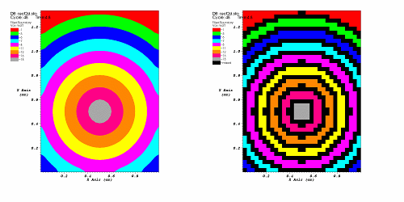

The FilledBoundary plot, since it deals almost exclusively with plotting materials, has an option to only draw clean zones, which are zones that contain a single material. When only clean zones are drawn, all clean cells are drawn normally but all zones that contained more than one material are drawn with a color that can be set to match the vis window's background color (see figure). Drawing clean zones is primarily used to examine how materials mix in 2D databases. To make VisIt draw only the clean zones, click the Clean zones only check box. After that, you can set the mixed color by clicking on the Mixed color color button and selecting a new color from the popup color palette.
|  |
| Figure 10 |